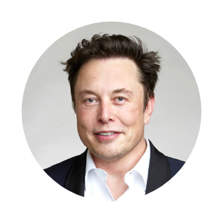

Elon Musk
CEO of Tesla
South African-born American entrepreneur who cofounded the electronic-payment firm PayPal and formed SpaceX, maker of launch vehicles and spacecraft. He was also one of the first significant investors in, as well as chief executive officer of, the electric car manufacturer Tesla.
Early life
Musk was born to a South African father and a Canadian mother. He displayed an early talent for computers and entrepreneurship. At age 12 he created a video game and sold it to a computer magazine. In 1988, after obtaining a Canadian passport, Musk left South Africa because he was unwilling to support apartheid through compulsory military service and because he sought the greater economic opportunities available in the United States.